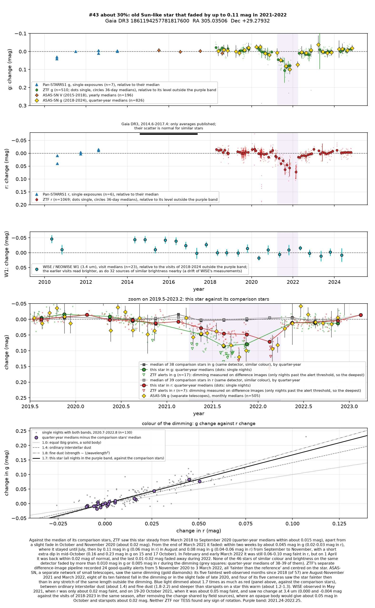
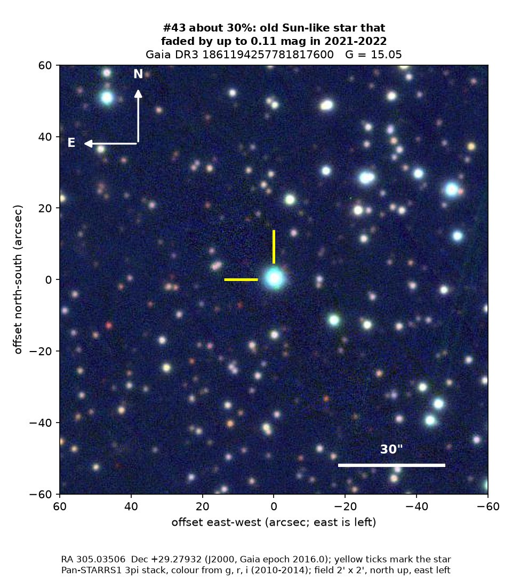
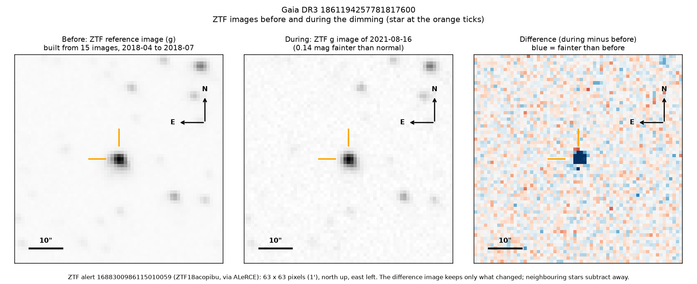
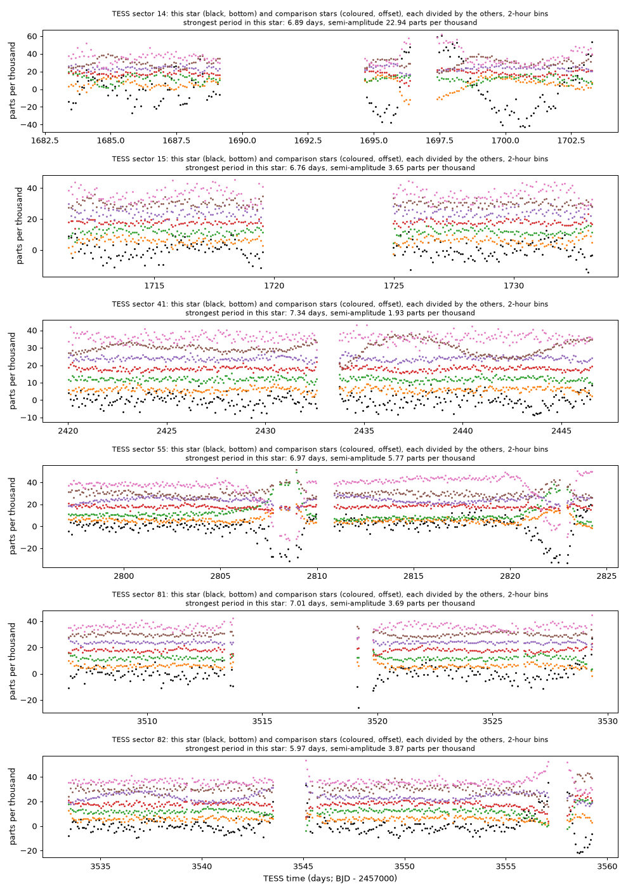

Professor of Mathematics
Paata Ivanisvili
Department of Mathematics, University of California, Irvine

Candidate 43: an old Sun-like star that faded for a year in 2021 and 2022
Why this estimate. The dimming is certainly real: two independent surveys recorded it, ZTF (the Zwicky Transient Facility, a survey telescope at Palomar Observatory in California) and ASAS-SN (a worldwide network of small telescopes). Its colour, the star’s age and quietness, and the lack of any rotation, even in NASA’s TESS space telescope during the dimming, argue against starspots. The estimate is not higher because the dimming is shallow, so its colour is uncertain; because infrared measurements cannot tell dust from starspots; because only one ZTF field covers the star; because there is no spectrum; and because candidate 27, 34 degrees away, faded and recovered on almost the same dates.
How to read the pictures. The finder chart shows a patch of sky two arcminutes across, about a fifteenth of the Moon’s width, with north up and east to the left. The star sits between the two yellow ticks, and the white bar is 30 arcseconds long. On a light curve the vertical axis is magnitude, a brightness scale on which larger numbers mean fainter stars, and it is drawn so that down means fainter. Purple shading marks the dimming. Each survey uses slightly different filters, so each is compared with its own normal level. The ZTF pictures show ZTF’s reference image of the star, an image taken during the dimming, and the difference between the two, in which only what changed remains: blue means fainter and red brighter. On the TESS light curves the star is black and the comparison stars are coloured.

What changed. The star is an old Sun-like star in Vulpecula, about 1,000 parsecs (3,300 light-years) away; Gaia’s models make it slightly hotter than the Sun, 40 per cent larger and some 8 billion years old. ZTF found it steady from 2018 until March 2021, apart from a slight fade of about 0.02 magnitudes in late 2020. It began to fade at the end of March 2021, and by August it had lost about 10 per cent of its green light and 6 per cent of its red. A short, deeper dip in mid-October took it 0.15 to 0.23 magnitudes below normal in both ZTF and ASAS-SN. It stayed 6 to 8 per cent faint until at least early March 2022 and recovered by 1 April, probably within a few days.
Why it might matter. Dust passing in front of the star is the likeliest cause. Green light dimmed about 1.7 times as much as red, between ordinary interstellar dust (1.4) and fine dust (1.8 to 2.2); starspots on a star like this would give 1.2 to 1.3. Old stars like this one spin slowly and are magnetically quiet, and their spots change their brightness by fractions of a per cent; this star’s hydrogen-alpha line shows no activity, and neither ZTF, in eight seasons, nor TESS, during the dimming, saw any rotation. WISE saw no change at 3.4 microns during the dimming, which disfavours an opaque body but cannot exclude spots. The star’s age, motion and lack of infrared excess rule out a young star with a dusty disc, and ASAS-SN makes an instrumental fault unlikely. The sharp end of the dimming suggests a dusty structure at least about 25 million km long, perhaps a disc around an unseen companion, as in epsilon Aurigae. A spectrum would settle what kind of star it is.
No record of the dimming could be found: SIMBAD has no entry for the star, Gaia DR3 lists no variability, and VSX (the variable-star index) and the other variable-star catalogues checked do not include it. It is not among the dimming stars of Tzanidakis et al. (2025), and there is no Transient Name Server entry, Gaia alert or paper giving its Gaia number. ZTF’s alert system holds only machine-generated classifications.
- Star
- Gaia DR3 1861194257781817600, an old Sun-like star
- Location
- RA 305.03506°, Dec +29.27932° (J2000), in Vulpecula, 4.0 degrees south of the Milky Way’s mid-plane
- Distance
- about 1,000 parsecs (3,300 light-years)
- Brightness
- Gaia G = 15.05, far too faint for the eye or a small telescope
- Probability
- This candidate is unconfirmed. The percentage under the title is an estimate of the chance that it is a real, previously unrecorded case of the kind described. The estimate has not been checked by outside experts. See the introduction to all fifty-eight candidates.
- Caveat
- There is no spectrum, so the star’s type and age rest on Gaia’s models, and the colour comes from ZTF alone. The dimming coincides with those of candidate 27 and of candidate 26, 27 degrees away, but the three stars are 870 to 2,400 parsecs away and both surveys saw each of them dim, so neither a single cloud nor the surveys can explain it; the coincidence is most likely chance, but unexplained.


